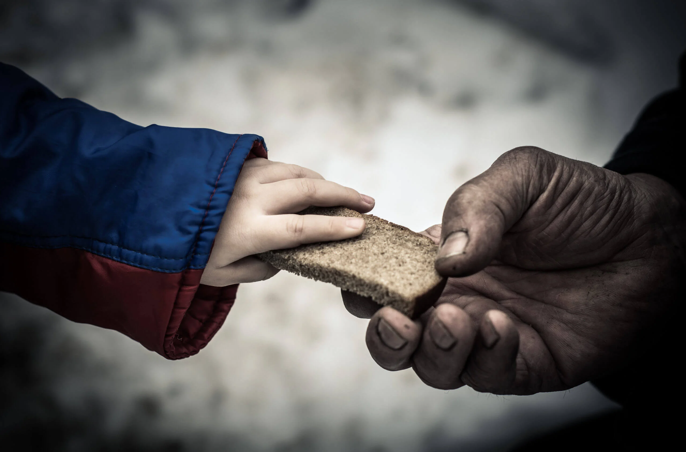

World hunger is a serious issue, with 733 million people globally experiencing hunger and many more facing malnutrition. The Integrated Food Phase Classification (IPC) estimates that 1.33 million people are experiencing famine or famine-like conditions, with Sudan currently facing its worst hunger crisis, with 25 million people facing famine, according to the UN. Chronic hunger, often linked to poverty, is more prevalent than acute hunger crises, as highlighted by Welthungerhilfe.
Approximately 733 million people, or nearly one in eleven, experience hunger daily.
The IPC estimates 1.33 million people are in this category.
Conflict, climate change, and inequality significantly contribute to the hunger crisis.
Lack of access to nutritious food can lead to malnutrition, impacting health and development.
Addressing poverty, promoting sustainable practices, and investing in agriculture can help reduce hunger.
information: